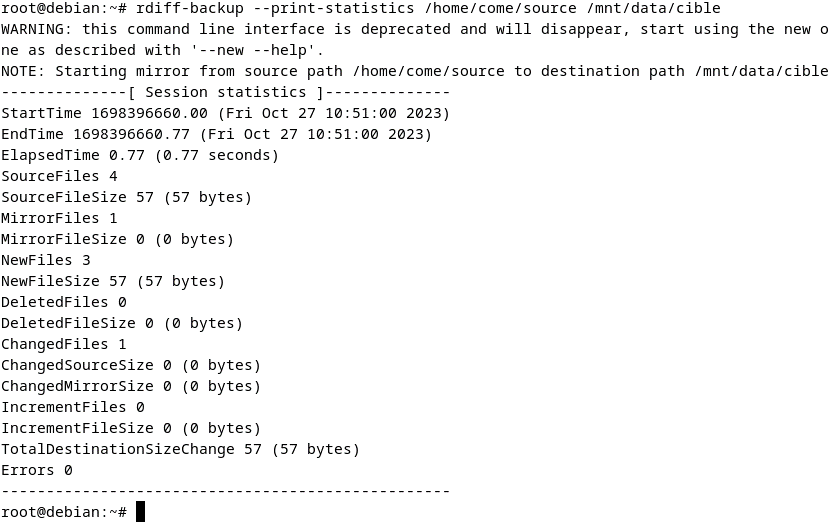

SAUVEGARDE
Sauvegarde de fichiers (rdiff-backup) :
Premièrement, je me déplace sur mon disque et crée mon dossier de sauvegarde :
(pwd me permet de savoir ou je suis) le chemin de mon dossier et le suivant /mnt/data)
Je me déplace maintenant dans mon dossier personnel et y crée un fichier texte :
Je télécharge l’application Rdiff-backup pour sauvegarder mes fichiers avec cette commande :
Apt install rdiff-backupJe vérifie maintenant la bonne installation avec cette commande :
Rdiff-backup -VIl faut maintenant que je lance la sauvegarde en indiquant le chemin absolu du fichier cible et de sa destination :
Ma commande sera la suivante :
rdiff-backup (--print-statistics) /home/come/source /mnt/data/cible
Ici on voit que mes 3 fichiers ont été sauvegardés depuis le répertoire source de mon dossier come dans le répertoire cible :